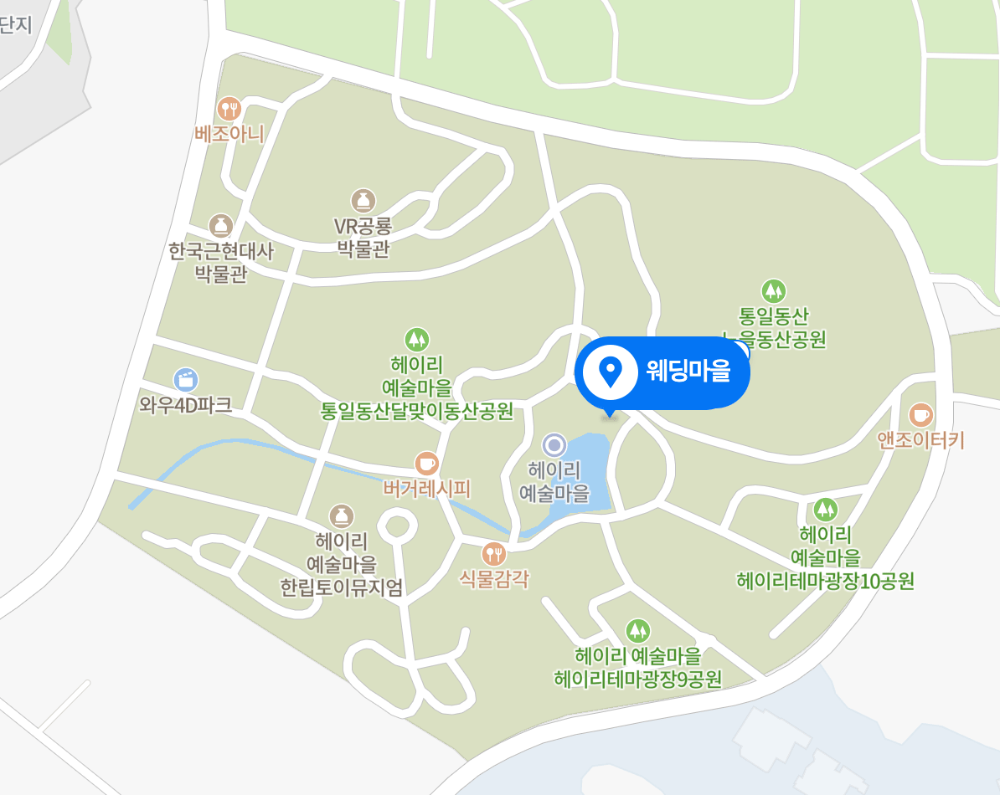

- 저희들의 오늘이 있기까지 보내주신
- 따뜻한 사랑과 깊은 관심에 감사하오며,
- 저희 두사람은 여러분의 축복을 받으며
- 진실한 가약을 맺고자 합니다.
- 수선한 상황으로 가족 친지분들과 예식을 진행하오니
- 마음으로 축복해주시면 감사하겠습니다.
이기백 그리고 백미하
백미하 그리고 이기백
결혼합니다
2021년 9월 12일 일요일 12시
파주 헤이리 웨딩마을
이재근 · 정승자 의 장남 기백
백구현 · 방선례 의 장녀 미하
사진 더 보기
오시는 길

웨딩마을
경기도 파주시 탄현면 헤이리마을길 76-12
지번: 법흥리 1652-234
주차: 건물 주변 주차 가능합니다. 주차장 이용하실 시 헤이리 예술마을 9주차장, 10주차장이 비교적 가깝습니다.